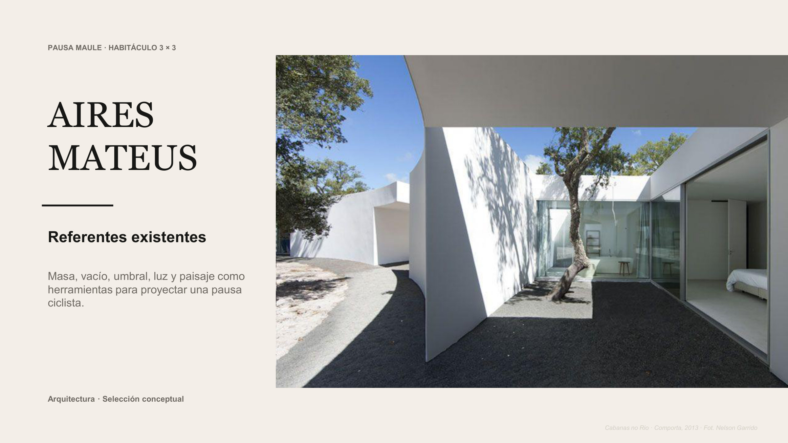
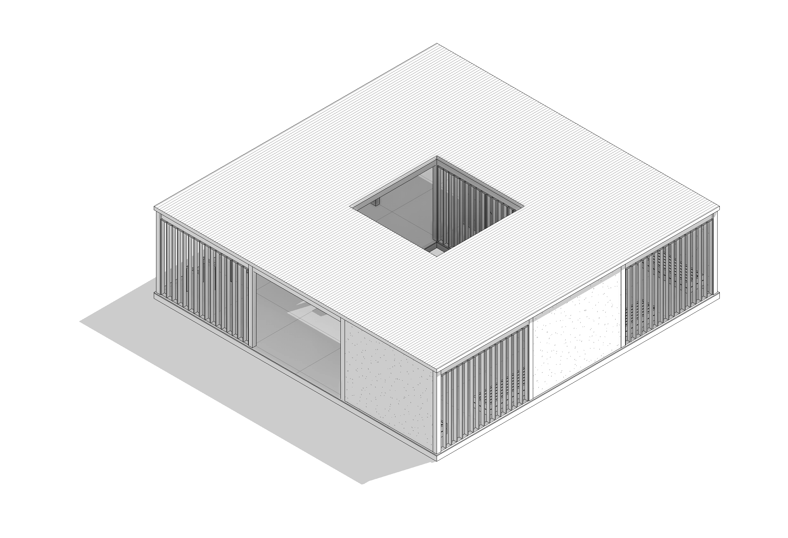
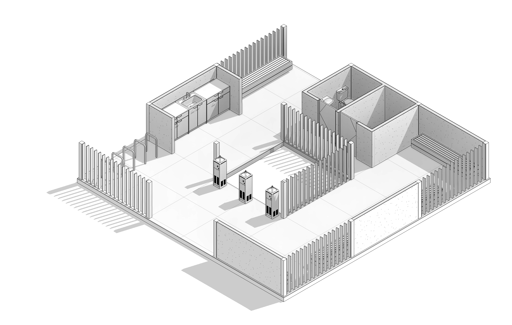
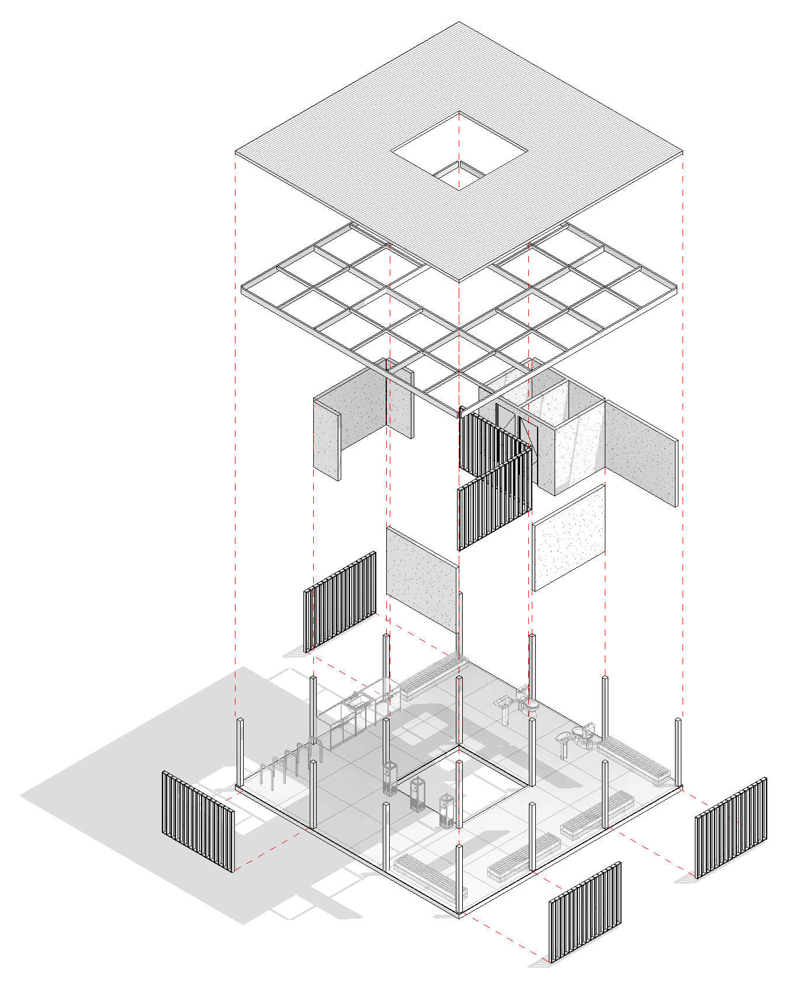
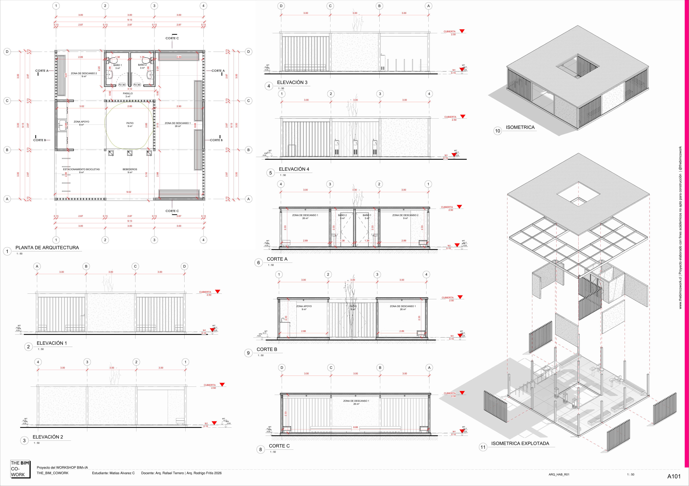

01
El partido
concepto sobre la grilla 3×3El partido organiza el programa sobre una retícula de nueve cuadrantes: cuatro llenos estructurales (madera + quincha) sostienen un vacío central, el patio, donde crece un árbol a través de la cubierta.
- Acceso principal resuelto en el cuadrante superior izquierdo, sin cruzar muros cortina.
- Los muros cortina perimetrales quedaron libres de accesos tras la corrección del partido: los recorridos pasan entre los llenos, no a través de los paños vidriados.
- El patio central es el umbral entre paisaje y recinto — ahí ocurre la pausa.
02
Referentes
5 precedentes de Aires Mateus01
Masa
02
Vacío
03
Umbral
04
Paisaje
05
Recorrido
Referentes Aires Mateus — contraste nine-square
5 precedentes contrastados contra el partido de Pausa Maule · 9 páginas

Abrir en pestaña nueva ↗
03
Imágenes del proyecto
renders e isométricasVistas isométricas



Videos
Interior — bebederos y descanso
Exterior — el habitáculo entre viñedos
04
Láminas
planimetría técnicaLámina A101 — Planimetría general
planta, 4 elevaciones, 3 cortes e isométricas · 1:50

Abrir en pestaña nueva ↗
05
Materialidad
verificada contra fichas de fabricanteQuincha
MURO_EXT_QUINCHA_12cm
Sistema quincha liviana húmeda — Corporación Protierra Chile, red MINVU/DITEC.
Ver elemento ↗
Pino Radiata
MT_PINO RADIATA · MLE 20c
Pilares glulam Hilam MLE, armazón dimensionado y paneles Arauco Machihembrado.
Ver elemento ↗
Zincalum
MT_PLANCHA ONDULADA ZINCALUM
Plancha ondulada sobre estructura de madera — Cubiertas Nacionales CN-1020.
Ver elemento ↗
Hormigón
RADIER_PULIDO_INT_HA_2cm
Radier con fibra Melón + endurecedor superficial Sikafloor-3 QuartzTop.
Ver elemento ↗
06
Documentos técnicos
reglas, PEB, NDI y parámetros
07
Proveedores
12 proveedores verificados| Elemento | Empresa | Producto | Sitio web |
|---|---|---|---|
| Muro / Quincha | Corporación Protierra Chile | Sistema Quincha Liviana Húmeda | redproterra.org |
| Cubierta | Cubiertas Nacionales | Panel Ondulado CN-1020 | cubiertasnacionales.cl |
| Radier | Melón | Hormigón con Fibra | melon.cl |
| Radier pulido | Sika Chile | Sikafloor-3 QuartzTop | chl.sika.com |
| Pilar estructural | Arauco — Hilam | Madera Laminada Encolada MLE 20c | arauco.com/hilam |
| Armazón | Arauco — MSD | Construcción Premium MSD | arauco.com |
| Muro cortina — montante | Arauco — MSD | Pino Radiata Cepillado | arauco.com |
| Muro cortina — panel | Arauco | MSD Revestimiento Machihembrado | arauco.com/chile |
| Puerta | Moldupanel (Puertas Chile) | Puerta Pino Radiata Italia 80×210 | puertaschile.cl |
| Herrajes | Häfele (vía El Carpintero) | Bisagras y cerraduras | elcarpintero.cl |
| Sanitarios | Fanaloza | New Valencia a Muro / Lavamanos Ciro | fanaloza.cl |
| Abastecimiento local | Sodimac / Construmart Talca | Distribución general | sodimac.cl |
Descargar documentos e imágenes
Referentes, proveedores, documentos técnicos, láminas e imágenes — no incluye el modelo Revit (ver punto 08)
08
Modelo Revit
HAB_ARQ_MODELO_R01.RVT7 199
Elementos totales
939
Tipos
55
Familias
70
Categorías
46
Vistas
3+2
Niveles principales + subniveles